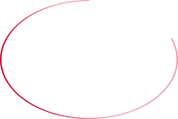
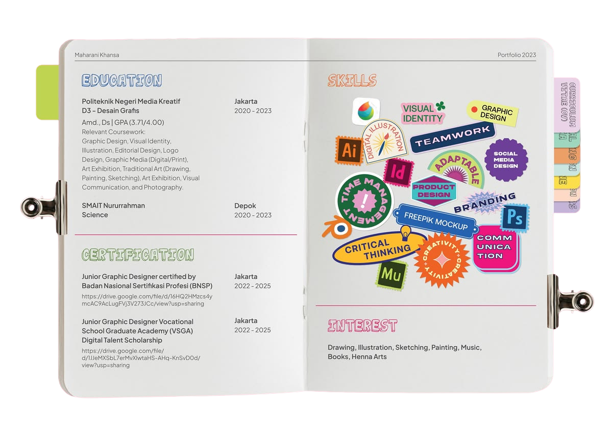

Welcome to
Kirti’s portfolio


prev a summer intern @
Accenture Song
I connect what people need with what a business is striving to achieve, then ideate, sketch and build ideas that bring the two together.
Featured Projects
About my process
